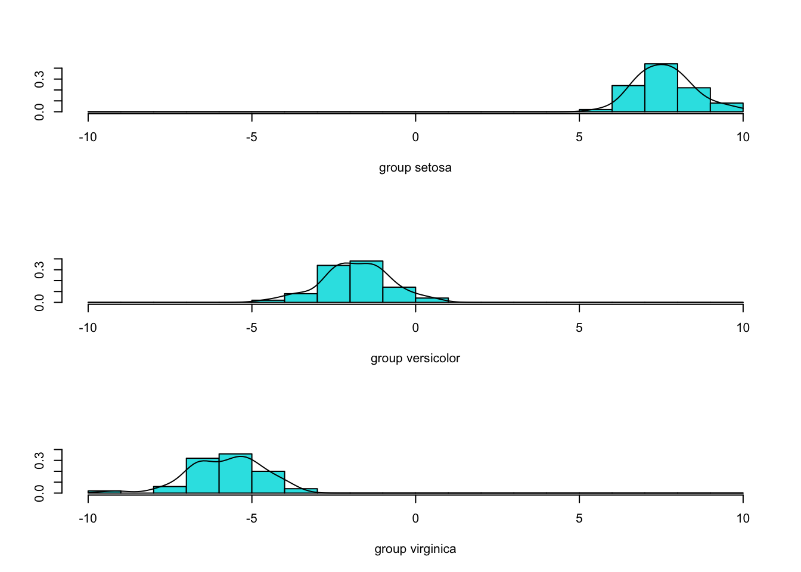

8.3 Fisher’s linear discriminant rule
Thus far we have assumed that observations from population \(\Pi_j\) have a \(N_p ( \boldsymbol{\mu}_j, {\mathbf \Sigma})\) distribution, and then used the MVN log-likelihood to derive the discriminant functions \(\delta_j(\mathbf x)\). The famous statistician R. A. Fisher took an alternative approach and looked for a linear discriminant functions without assuming any particular distribution for each population \(\Pi_j\).
This way of thinking leads to a form of dimension reduction. We find a projection of the data into a lower dimensional space that is optimal for classifying the data into the different populations.
Variance decomposition
Suppose we have a training sample \(\mathbf x_{1,j}, \ldots, \mathbf x_{n_j,j}\) from \(\Pi_j\) for \(j=1,\ldots,g\). Fisher’s approach starts by splitting the total covariance matrix of the data (i.e. ignoring class labels) into two parts.
\[\begin{align*} n\mathbf S=\mathbf X^\top\mathbf H\mathbf X&= \sum_{j=1}^g\sum_{i=1}^{n_j} (\mathbf x_{i,j} - \bar{\mathbf x})(\mathbf x_{i,j} - \bar{\mathbf x})^\top\\ &=\sum_{j=1}^g\sum_{i=1}^{n_j} (\mathbf x_{i,j} - \hat{{\boldsymbol{\mu}}}_j+\hat{{\boldsymbol{\mu}}}_j-\bar{\mathbf x})(\mathbf x_{i,j} - \hat{{\boldsymbol{\mu}}}_j+\hat{{\boldsymbol{\mu}}}_j-\bar{\mathbf x})^\top\\ &= \sum_{j=1}^g\sum_{i=1}^{n_j} (\mathbf x_{i,j} - \hat{{\boldsymbol{\mu}}}_j)(\mathbf x_{i,j} - \hat{{\boldsymbol{\mu}}}_j)^\top+ \sum_{j=1}^g n_j (\hat{{\boldsymbol{\mu}}}_j-\bar{\mathbf x})(\hat{{\boldsymbol{\mu}}}_j-\bar{\mathbf x})^\top\\ &=n\mathbf W+n\mathbf B \end{align*}\] where \(\hat{{\boldsymbol{\mu}}}_j=\frac{1}{n_j} \sum \mathbf x_{i,j} = \bar{\mathbf x}_{+,j}\) is the sample mean of the \(j\)th group, \(\bar{\mathbf x} = \frac{1}{n} \sum_{j=1}^g \sum_{i=1}^{n_j} \mathbf x_{ij}\) is the overall mean, and \(n=\sum_{j=1}^g n_j\).
This has split the total covariance matrix into a within-class covariance matrix \[ \mathbf W= \frac{1}{n}\sum_{j=1}^g \sum_{i=1}^{n_j} (\mathbf x_{ij} - \hat{{\boldsymbol{\mu}}}_j) (\mathbf x_{ij} - \hat{{\boldsymbol{\mu}}}_j)^\top = \frac{1}{n}\sum_{j=1}^g n_j \mathbf S_j \] and a between-class covariance matrix \[ \mathbf B= \frac{1}{n}\sum_{j=1}^g n_j (\hat{{\boldsymbol{\mu}}}_j - \bar{\mathbf x}) (\hat{{\boldsymbol{\mu}}}_j - \bar{\mathbf x})^\top\] i.e. \[\mathbf S= \mathbf W+ \mathbf B.\]
\(\mathbf W\) is an estimator of \(\boldsymbol{\Sigma}\), the shared covariance matrix in the MVN distributions for each population (c.f. Equation. (8.4)).
If \(\mathbf M\) is a \(n \times p\) matrix of estimated class centroids for each observation \[\mathbf M= \begin{pmatrix} -& \hat{{\boldsymbol{\mu}}}_1 &-\\ &\vdots &\\ -& \hat{{\boldsymbol{\mu}}}_1 &-\\ -& \hat{{\boldsymbol{\mu}}}_2 &-\\ &\vdots&\\ -& \hat{{\boldsymbol{\mu}}}_g &-\\ &\vdots &\\ -& \hat{{\boldsymbol{\mu}}}_g &-\end{pmatrix}\] then \(\mathbf B=\frac{1}{n}\mathbf M^\top\mathbf H\mathbf M\) is the covariance matrix of \(\mathbf M\).
Fisher’s criterion
Fisher’s approach was to find a projection of the data \(z_i = \mathbf a^\top \mathbf x_i\) or \[\mathbf z= \mathbf X\mathbf a\] in vector form, that maximizes the between-class variance relative to the within-class variance.
Using the variance decomposition from above, we can see that the total variance of \(\mathbf z\) is \[\begin{align*} {\mathbb{V}\operatorname{ar}}(z_i)&= {\mathbb{V}\operatorname{ar}}(\mathbf a^\top \mathbf x_i)\\ &=\mathbf a^\top {\mathbb{V}\operatorname{ar}}(\mathbf x_i) \mathbf a\\ &=\mathbf a^\top \mathbf S\mathbf a\\ &= \mathbf a^\top\mathbf W\mathbf a+ \mathbf a^\top\mathbf B\mathbf a\\ \end{align*}\] which we have decomposed into the within-class variance of \(\mathbf z\) and the between-class variance \(\mathbf z\).
Fisher’s criterion is to choose a vector, \(\mathbf a\), to maximise the ratio of the between-class variance relative to the within-class variance of \(\mathbf z=\mathbf X\mathbf a\), i.e., to solve \[\begin{equation} \max_{\mathbf a}\frac{\mathbf a^\top \mathbf B\mathbf a}{\mathbf a^\top \mathbf W\mathbf a}, \tag{8.5} \end{equation}\]
The idea is that this choice of \(\mathbf a\) will make the classes most easily separable.
Solving the optimization problem
How do we solve the optimization problem (8.5) and find the optimal choice of \(\mathbf a\)?
Proposition 8.4 A vector \(\mathbf a\) that solves \[\max_{\mathbf a}\frac{\mathbf a^\top \mathbf B\mathbf a}{\mathbf a^\top \mathbf W\mathbf a}\] is an eigenvector of \(\mathbf W^{-1}\mathbf B\) corresponding to the largest eigenvalue of \(\mathbf W^{-1}\mathbf B\).
Proof. Firstly, note that an equivalent optimization problem is
\[\begin{align*} \mbox{Maximize } &\mathbf a^\top \mathbf B\mathbf a\\ \mbox{ subject to } &\mathbf a^\top \mathbf W\mathbf a=1 \end{align*}\]
as we can rescale \(\mathbf a\) without changing the objective (8.5). This looks a lot like the optimization problems we saw in the chapters on PCA and CCA.
To solve this, note that if we write \(\mathbf b=\mathbf W^{\frac{1}{2}}\mathbf a\) then the optimization problem becomes
\[\begin{align*} \mbox{Maximize } &\mathbf b^\top \mathbf W^{-\frac{1}{2}}\mathbf B\mathbf W^{-\frac{1}{2}}\mathbf b\\ \mbox{ subject to } &\mathbf b^\top \mathbf b=1. \end{align*}\] Proposition 3.7 tells us that the maximum is obtained when \(\mathbf b=\mathbf v_1\), where \(\mathbf v_1\) is the eigenvector of \(\mathbf W^{-\frac{1}{2}}\mathbf B\mathbf W^{-\frac{1}{2}}\) corresponding to the largest eigenvalue of \(\mathbf W^{-\frac{1}{2}}\mathbf B\mathbf W^{-\frac{1}{2}}\), \(\lambda_1\) say.
Converting back to \(\mathbf a\) gives the solution to the original optimization problem (8.5) to be \[\mathbf a= \mathbf W^{-\frac{1}{2}}\mathbf v_1\]
Note that this is an eigenvalue of \(\mathbf W^{-1}\mathbf B\)
\[\begin{align*} \mathbf W^{-1}\mathbf B\mathbf a&= \mathbf W^{-1}\mathbf B\mathbf W^{-\frac{1}{2}}\mathbf v_1 \\ &= \mathbf W^{-\frac{1}{2}}\mathbf W^{-\frac{1}{2}}\mathbf B\mathbf W^{-\frac{1}{2}}\mathbf v_1\\ &= \lambda_1\mathbf W^{-\frac{1}{2}}\mathbf v_1\\ &= \lambda_1 \mathbf a \end{align*}\]
Finally, to complete the proof we should check that \(\mathbf W^{-1}\mathbf B\) doesn’t have any larger eigenvalues, but we can do this by showing that its eigenvalues are the same as the eigenvalues of \(\mathbf W^{-\frac{1}{2}}\mathbf B\mathbf W^{-\frac{1}{2}}\). This is left as an exercise (note we’ve already done one direction - all you need to do is show that if \(\mathbf W^{-1}\mathbf B\) has eigenvalue \(\lambda\) then so does \(\mathbf W^{-\frac{1}{2}}\mathbf B\mathbf W^{-\frac{1}{2}}\)).
Fisher’s discriminant rule
The function \(L(\mathbf x)=\mathbf a^\top \mathbf x\) is called Fisher’s linear discriminant function. Once \(L(\mathbf x)\) has been obtained, we allocate \(\mathbf x\) to the population \(\Pi_k\) whose discriminant score \(L(\hat{{\boldsymbol{\mu}}}_k)\) is closest to \(L(\mathbf x)\), that is, we use the discriminant rule \[ d^{Fisher}(\mathbf x) = \arg \min_k |L(\mathbf x) - L({\boldsymbol{\mu}}_k)| = \arg \min_k | \mathbf a^\top \mathbf x- \mathbf a^\top \hat{{\boldsymbol{\mu}}}_k |. \]
This is of the same form as saw in the earlier sections. If we let \(\delta_k(\mathbf x)= -|\mathbf a^\top (\mathbf x-\hat{{\boldsymbol{\mu}}}_k)|\) then we see that \(d^{Fisher}(\mathbf x) = \arg \max_k \delta_k(\mathbf x)\) as before.
If there are only two populations (and suppose \(L({\boldsymbol{\mu}}_1)> L({\boldsymbol{\mu}}_2)\)), this is equivalent to classifying to population 1 if \(L(\mathbf x)>t\) and to population 2 otherwise, where \(t = \frac{1}{2}(L({\boldsymbol{\mu}}_1)+L({\boldsymbol{\mu}}_2))\).
This is visualized in Figure 8.6 for the iris data. The black points are the setosa data, and the green the viriginica. The diagonal black line is in the direction \(\mathbf a\). Along that line we have plotted the projection of the data points onto the line (\(\mathbf x^\top \mathbf a\)), with the mean of each population and their projections marked with \(+\). The red line is perpendicular to \(\mathbf a\), and joins the midpoint of the two population means, \(\mathbf h= \frac{\hat{{\boldsymbol{\mu}}}_s+\hat{{\boldsymbol{\mu}}}_v}{2}\), with the projection of that point onto \(\mathbf a\). The red diamond marks the decision boundary for the projected points, i.e., if the point is to the left of this we classify as setosa, otherwise viriginica. It is half way between the projection of the two population means.
In Figure 8.6 \(\mathbf a\) is chosen to be Fisher’s optimal vector (the first eigenvector of \(\mathbf W^{-1}\mathbf B\)). This is the projection that is optimal for maximizing the ratio of the between-group to within-group variance, i.e., it optimally separates the two populations in the projection. In Figure 8.7 \(\mathbf a\) is instead chosen to be the first principal component, i.e., the first eigenvector of the covariance matrix. This is the projection that maximizes the variance of the projected points (as done in PCA). Note that this is different to the LDA projection, and does not separate the two populations as cleanly as the LDA projection did.

Figure 8.6: Visualization of Fishers discriminant analysis.
Figure 8.7: Projection onto the first principal component.
Multiple projections
To summarize what we’ve found so far, we have seen that the vector \(\mathbf a\) which maximizes \[\frac{\mathbf a^\top \mathbf B\mathbf a}{\mathbf a^\top \mathbf W\mathbf a} \] is the first eigenvector of \(\mathbf W^{-1}\mathbf B\). As we did with PCA and CCA, we can continue and find a second, third, etc projection of the data. We’re not going to go through the details of the derivation, but we can consider the projection matrix \[\mathbf A= \begin{pmatrix}|& \ldots &|\\ \mathbf a_1 & \ldots & \mathbf a_r\\ |& \ldots &| \end{pmatrix}\] which has columns equal to the first \(r\) eigenvectors of \(\mathbf W^{-1}\mathbf B\).
Recall that \[\mathbf B= \frac{1}{n}\sum_{j=1}^g n_j (\hat{{\boldsymbol{\mu}}}_j - \bar{\mathbf x}) (\hat{{\boldsymbol{\mu}}}_j - \bar{\mathbf x})^\top\] is the variance of the \(g\) population means. The points \(\hat{{\boldsymbol{\mu}}}_j - \bar{\mathbf x}\) lie in a \(g-1\) dimensional subspace of \(\mathbb{R}^p\) (they must sum to \({\boldsymbol 0}\)), and so \(\mathbf B\) and also \(\mathbf W^{-1}\mathbf B\) has rank at most \(\min(g-1,p)\). Thus we can find at most \(\min(g-1,p)\) projections of the data for maximizing the separation between the classes.
To classify points using \(r\) different projections, we use the vector discriminant function
\[\mathbf L(\mathbf x) = \mathbf A^\top \mathbf x\] and use the discriminant rule \[d^{Fisher}(\mathbf x) = \arg \min_k ||\mathbf L(\mathbf x) - \mathbf L({\boldsymbol{\mu}}_k)||_2,\] i.e., we compute the \(r\) dimensional projection of the data and then find the which (projected) population mean it is closest to.
Note the dimension reduction here. We have gone from an observation \(\mathbf x\in \mathcal{R}^p\) to a projected point \(\mathbf A^\top\mathbf x\in \mathcal{F}^t\). We are free to choose \(r\), which can result in useful ways of visualizing the data.
8.3.1 Iris example continued
Let’s continue the iris example we had before, using the full dataset of 150 observations on 3 species, with 4 measurements on each flower.
library(vcvComp)
B=cov.B(iris[,1:4], iris[,5])
W=cov.W(iris[,1:4], iris[,5])
iris.eig <- eigen(solve(W)%*% B)
iris.eig$values## [1] 4.732214e+01 4.195248e-01 7.749285e-15 -4.752967e-15We can see that \(\mathbf W^{-1}\mathbf B\) only has two positive eigenvalues, and so is rank 2. We expected this, as we said the rank of \(\mathbf W^{-1}\mathbf B\) must be less than \(\min(g-1,p)= \min(2,4)=2\). We can plot these projections and look at the separation achieved.
V <- iris.eig$vectors[,1:2]
Z <- as.matrix(iris[,1:4])%*% V|>data.frame()|> mutate()
Z |> ggplot(aes(x=X1, y=X2, colour=iris$Species))+geom_point()+xlab('LD1')+ylab('LD2')Figure 8.8: 2-dimensional LDA projection of the iris data
We can see that the first projected coordinate is doing nearly all of the useful work in separating the three populations. We can see this in the eigenvalues (c.f. the scree plots used in PCA) which can be used to understand the importance of each projected coordinate in separating the populations (this is the Proportion of trace reported in the lda output).
## [1] 0.991212605 0.008787395R will automatically plot this projection for us:
par(pty="s")
iris.lda <- lda(Species ~., iris)
plot(iris.lda,col=as.integer(iris$Species)+1, abbrev=1)Figure 8.9: 2-dimensional LDA projection of the iris data using the built-in R plotting function
Although this looks different to Figure 8.8, the projection is essentially the same it has just flipped the \(y\) axis.
Using the option dimen = 1 will plot histograms of the first LDA projection for each group, which all we need in this example to separate the populations.

Comparison with PCA
We can compare the LDA projection to the 2-dimensional projection found by PCA:
iris.pca = prcomp(iris[,1:4])
iris$PC1=iris.pca$x[,1]
iris$PC2=iris.pca$x[,2]
ggplot(aes(x=PC1, y=PC2, colour=Species), data=iris)+geom_point()
Figure 8.10: 2-dimensional PCA projection of the iris data
PCA hasn’t separated the 3 populations as cleanly as LDA did, but that is not a surprise as that is not its aim (it aim is to maximize the variance). PCA doesn’t use the population labels, and so there is no reason why it should separate the populations. But this does illustrate the importance of choosing the right multivariate statistical methods.
8.3.2 Links between methods
When \(g=2\), Fisher’s rule and the sample ML rule with \(\boldsymbol{\Sigma}_1=\boldsymbol{\Sigma}_2=\boldsymbol{\Sigma}\) turn out to be the same. Note that in the sample ML rule we assumed that the two groups are from \(N_p({\boldsymbol{\mu}}_i, \boldsymbol{\Sigma})\) populations, but Fisher’s rule makes no such assumption.
Proposition 8.5 If \(g=2\) then Fisher’s rule and the sample ML rule described in Section 8.1.2 are equivalent.
Proof. Beyond the scope of the module.
For \(g > 2\), the sample ML rule and Fisher’s linear rule will not, in general, be the same. Fisher’s rule is linear when \(g>2\) and is easier to implement than ML rules when there are several populations. It is often reasonable to use Fisher’s rule for non-normal populations. In particular, Fisher’s rule requires fewer assumptions than ML rules. However, the ML rule is ‘optimal’ in some sense when its assumptions are valid.
There is also a link between LDA and linear regression when there are only two groups. If we let
\[ y_i = \begin{cases} 1 &\mbox{ if }i \mbox{ is from } \Pi_1\\ -1 &\mbox{ otherwise} \end{cases} \]
then if we fit the model \[\mathbf y= \mathbf X\boldsymbol \beta+ \mathbf e\] we find \(\boldsymbol \beta\) is in the same direction as the first eigenvector of \(\mathbf W^{-1}\mathbf B\).
library(dplyr)
iris3 <- iris %>% filter(Species != "versicolor") %>%
dplyr::select(Sepal.Length, Sepal.Width, Species)
iris3$pm1 <- as.integer(iris3$Species)-2
# convert to +1 and -1
iris3.lm <- lm(pm1~Sepal.Width+Sepal.Length, iris3)
coef(iris3.lm)[2]/coef(iris3.lm)[3]## Sepal.Width
## -1.137257## [1] -1.137257